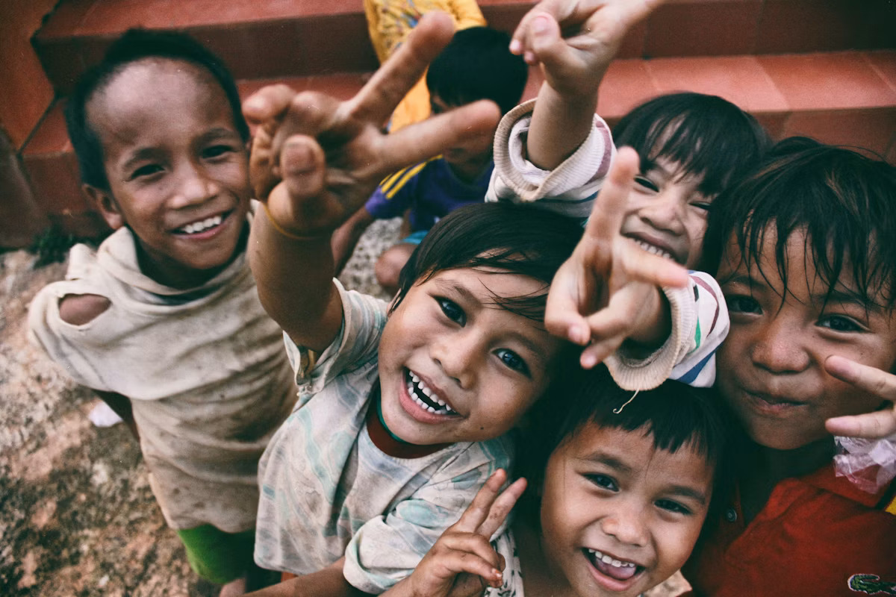

What poverty is
Poverty means lacking the resources to meet basic needs such as food, clean water, shelter, healthcare and education. It affects dignity, opportunity and hope, not just income.
Causes
Conflict, climate shocks, inequality, lack of education and unemployment trap families in cycles that can span generations.
Effects on families & children
Hunger, child labour, poor health, illiteracy and isolation. Children are twice as likely to live in extreme poverty as adults.
"Poverty is not an accident. Like slavery and apartheid, it is man-made and can be removed by the actions of human beings." — Nelson Mandela
Ways to help (click to expand)
- Donate to verified charities (UNICEF, World Food Programme).
- Sponsor a child's education.
- Buy fair-trade products.
- Volunteer locally at food banks and shelters.